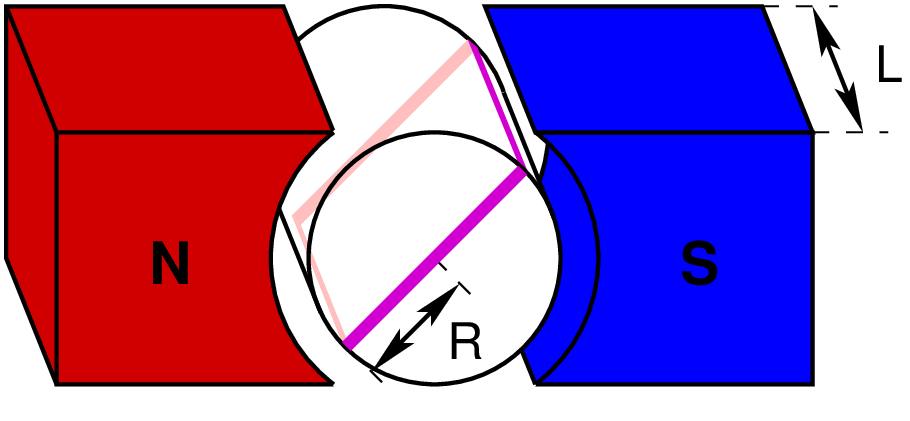
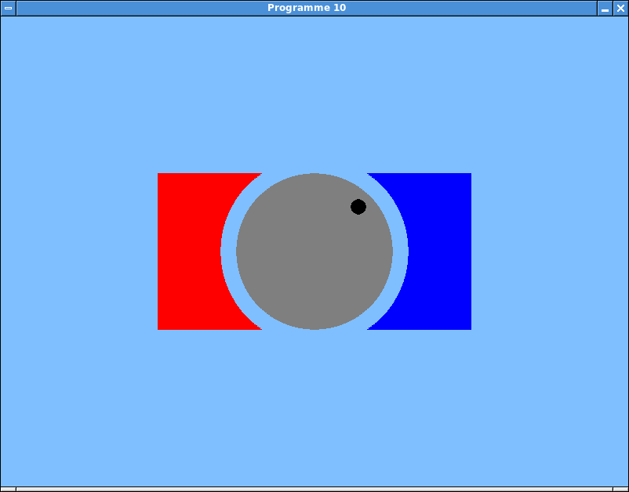
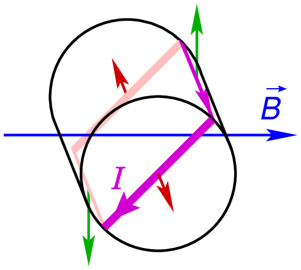
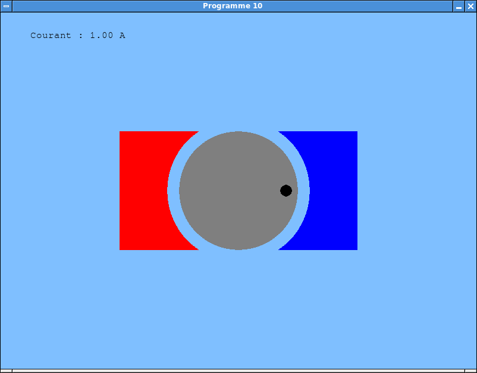
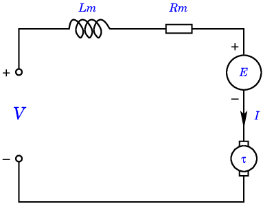
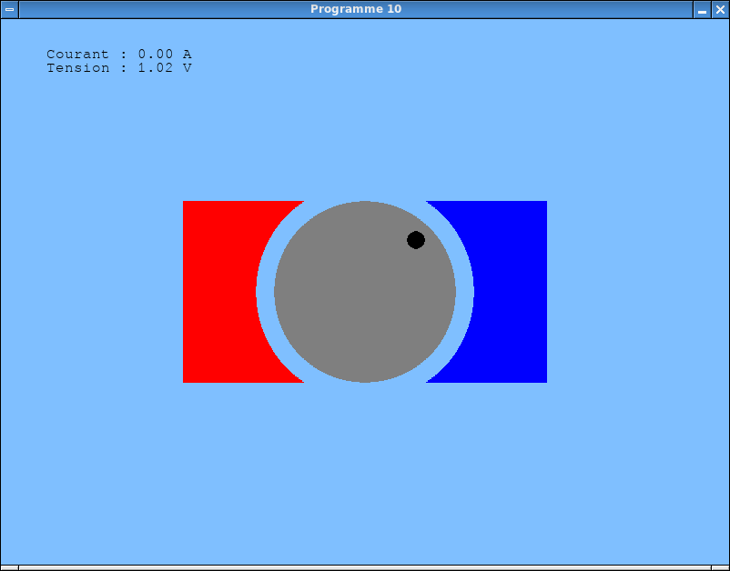

Laboratoire 5¶
Les notions abordées dans ce laboratoire sont les suivantes:
- Mathématique:
- Le produit vectoriel.
- Physique:
- La force de Laplace.
- La loi de Faraday.
- Le couple, l’accélération angulaire et le moment d’inertie.
- La deuxième loi de Newton pour un mouvement rotationnel.
- La loi d’Ohm.
Programme 10: Le moteur à courant continu¶
L’objectif de ce laboratoire consiste à simuler un moteur à courant continu. Nous considérons un modèle simplifié de moteur construit de la façon suivante:
Le rotor comprend un seul enroulement, comprenant un nombre \(K\) de spires. Le rayon du rotor est noté \(R\), et sa longueur est notée \(L\).
Chaque spire du rotor a donc la forme d’un rectangle de longueur \(L\) et de largeur \(2R\). Sur le diagramme ci-dessous, les spires du rotor sont dessinées en mauve.
Le stator est composé d’aimants permanents qui placent le rotor dans un champ magnétique supposé constant et uniforme.
Si ces aimants sont disposés comme dans le dessin ci-dessous, le champ magnétique \(\vec{B}\) dans le rotor sera donc horizontal, et orienté de la gauche vers la droite.
L’inductance de l’enroulement est supposée négligeable.
Géométrie du moteur.
{kind=link}
L’affichage du moteur¶
A ce stade des laboratoires, vous avez acquis suffisamment d’expérience pour pouvoir écrire un programme Pygame sans suivre un tutoriel détaillé.
Votre but consiste donc à écrire un premier programme qui
- ouvre une fenêtre de 800 par 600 pixels.
- gère une variable globale
angle_moteurcontenant à chaque instant la position angulaire courante du rotor, exprimée en radians par rapport à l’horizontale. - y dessine une vue en deux dimensions du moteur, incluant une marque permettant de repérer la position angulaire du rotor.
- rafraîchit l’image 25 fois par seconde, tout en traitant une boucle d’évènements chargée de détecter la fermeture de la fenêtre.
L’idée est d’arriver à un affichage similaire à celui-ci. (Dans cet exemple, l’angle du rotor est égal à \(\pi/4\).)
Affichage du moteur.
{kind=link}
Premiers mouvements¶
Nous allons maintenant simuler le comportement du moteur lorsqu’on injecte un courant \(I\) dans son enroulement.
On sait qu’un conducteur rectiligne parcouru par un courant et placé dans un champ magnétique subit une force de Laplace égale à
\[\vec{F} = I \vec{\ell} \times \vec{B},\]
où
- \(\vec{\ell}\) est un vecteur orienté comme le courant dans le conducteur, et de même longueur que ce dernier,
- \(I\) est le courant parcourant le conducteur,
- \(\vec{B}\) est le champ magnétique, et
- “\(\times\)” désigne le produit vectoriel.
Dans le cas de notre moteur, chaque spire de l’enroulement est un rectangle, et possède donc quatre brins rectilignes:
Ceux qui sont perpendiculaires à l’axe du rotor subissent des forces opposées dont la résultante est nulle (en rouge sur le diagramme ci-dessous).
Ceux qui sont parallèles à l’axe subissent des forces qui font tourner le rotor (en vert sur le diagramme).
Forces de Laplace dans le moteur.
{kind=link}
Le couple \(\tau\) exercé par ces forces sur le rotor est facile à calculer: Si l’angle du rotor avec l’horizontale est noté \(\theta\):
Chaque brin parallèle à l’axe de rotation subit une force égale à \(LIB\).
Le couple correspondant vaut \(RLIB \cos \theta\).
Etant donné qu’il y a \(K\) spires et que chacune d’entre elles contient deux brins contribuant à ce couple, ce dernier vaut au total
\[\tau = 2KRLIB \cos \theta.\]
Les modifications à apporter à votre programme afin qu’il simule le mouvement du rotor sont les suivantes:
Pour rendre le programme interactif, le courant \(I\) ne sera injecté dans l’enroulement que lorsqu’on appuie sur une touche, par exemple la barre d’espacement.
Pour ce faire, vous pouvez:
- Modifier le code responsable de la gestion des évènements de façon
à détecter ceux de type
pygame.KEYDOWN, et dont le champkeyest égal àpygame.K_SPACE. - Lorsqu’un tel évènement est détecté, affecter la valeur 5 à une
variable
compteur, initialisée par défaut à 0. - A chaque itération de la boucle principale du programme, examiner
la valeur de
compteur. Si celle-ci est nulle, attribuer la valeur 0 à une variable globalecourant_moteur. Si, au contraire, le compteur est non nul, le décrémenter et affecter àcourant_moteurune valeur de 1 ampère. - Exécuter
pygame.key.set_repeat(10, 10)avant de rentrer dans la boucle principale du programme, afin d’activer le mode de répétition rapide des touches du clavier.
- Modifier le code responsable de la gestion des évènements de façon
à détecter ceux de type
Ajouter un tableau de bord, permettant de vérifier que le mécanisme du point précédent a été correctement implémenté. A ce stade, ce tableau de bord doit se contenter d’afficher la valeur du courant, comme dans l’exemple ci-dessous:
Affichage du courant.
Dans cet exemple,
angle_moteura été initialisé à 0. Le tableau de bord doit afficher 1 A pendant quelques dixièmes de secondes après un appui sur la barre d’espacement, et 0 A le reste du temps.Implémenter la simulation du mouvement. La procédure est similaire à celle que vous avez déjà suivie dans les programmes précédents, pour simuler le mouvement de corps chargés placés dans un champ électromagnétique:
En plus de la variable
angle_moteur, définir une variable globalevitesse_moteurdestinée à retenir la vitesse angulaire du moteur, exprimée en radians par seconde. Ces deux variables peuvent être initialisées à zéro.A chaque itération de la la boucle principale, appeler une fonction
mettre_a_jour_moteur(t)chargée de calculer les équations du mouvement et de modifierangle_moteuretvitesse_moteuren conséquence.L’argument
tde cette fonction est l’instant courant, que vous pouvez récupérer par un appel àpygame.time.get_ticks(). N’oubliez pas de le convertir en secondes, afin que la fonctionmettre_a_jour_moteur()puisse travailler avec des unités standard.Dans
mettre_a_jour_moteur(), calculer le couple \(\tau\) subi par le rotor. Les constantes à utiliser sont les suivantes:- Le rotor comprend \(K = 1000\) spires.
- Le rayon du moteur vaut \(R = 0.02\) m, et sa longueur est égale à \(L = 0.06\) m.
- Le champ magnétique vaut \(|\vec{B}| = 0.5\) T.
Toujours dans cette fonction, calculer l’accélération angulaire \(\alpha\) subie par le rotor, grâce à la variante rotationnelle de la seconde loi de Newton:
\[\tau = J \alpha,\]où \(J\) est le moment d’inertie du rotor. Pour votre simulation, vous pouvez utiliser la valeur \(J = 1~\mbox{kg}.\mbox{m}^2\).
Sur base de \(\alpha\) et de la différence de temps \(\delta\) écoulée depuis le dernier appel à
mettre_a_jour_moteur(), calculer les nouvelles valeurs des variablesvitesse_moteuretangle_moteur. Le principe est similaire à la mise à jour de la vitesse et de la position dans les programmes précédents.
Tester votre programme. Si vous appuyez sur la barre d’espacement lorsque la marque du rotor est du côté droit (près du pôle sud du stator, en bleu), vous devriez pouvoir accélérer la rotation. Si vous appuyez lorsque la marque est située à gauche (près du pôle nord, en rouge), le moteur devrait ralentir, et même pouvoir changer de sens de rotation. Si, à partir de l’arrêt, vous laissez la barre d’espacement enfoncée, le moteur devrait effectuer des oscillations régulières entre les deux sens de rotation. Est-ce bien le cas?
Pour rendre la simulation plus réaliste, vous pouvez ajouter un couple de frottement à celui calculé dans
mettre_a_jour_moteur(). Ce couple de frottement sera égal à\[\tau_F = - c \dot{\theta},\]où
- \(c\) est un coefficient de frottement que l’on peut choisir égal à \(0.2\) N.m.s,
- \(\dot{\theta}\) est la vitesse angulaire du moteur.
- le signe “\(-\)” indique que ce frottement s’oppose à la direction de rotation.
Tester cette nouvelle version du programme. Si vous cessez d’injecter du courant dans son enroulement, le moteur devrait maintenant ralentir, et finalement s’arrêter. Si vous laissez la barre d’espacement enfoncée, les oscillations devraient diminuer en amplitude, jusqu’à ce que le moteur se retrouve bloqué dans une configuration où les forces de Laplace ne parviennent plus à le faire tourner.
{kind=link}
La commutation¶
Dans sa configuration actuelle, notre moteur n’est pas directement utilisable: Lorsqu’il est parcouru par un courant constant, il ne tourne pas de façon permanente.
Les moteurs à courant continu incluent un mécanisme de collecteur qui vise à résoudre ce problème. Il s’agit d’un dispositif mécanique qui inverse sélectivement le sens du courant dans l’enroulement en fonction de la position angulaire du rotor.
La marche à suivre afin d’implémenter une tel mécanisme dans votre programme est la suivante:
Dans la fonction
mettre_a_jour_moteur(), calculer à partir decourant_moteurune nouvelle variablecourant_enroulement, de la façon suivante:- Si
angle_moteurest compris entre 0 et \(\pi /2\), ou bien entre \(3\pi /2\) et \(2 \pi\), alorscourant_enroulement = courant_moteur. - Si
angle_moteurest compris entre \(\pi /2\) et \(3\pi /2\), alorscourant_enroulement = -courant_moteur.
Attention: Pour que le critère précédent soit valide, il faut que
angle_moteurpossède une valeur comprise entre 0 et \(2 \pi\). Vous pouvez utiliser la fonctionmath.fmod()pour ramener cette variable dans cet intervalle.- Si
Essayer le programme. Le moteur devrait à présent tourner de façon continue si vous laissez la barre d’espacement enfoncée.
Le circuit équivalent du moteur¶
En pratique, il est difficile d’injecter directement un courant donné dans les enroulements d’un moteur. On applique plutôt une tension à ses bornes, dont l’effet sera de faire circuler un courant dans le moteur.
D’un point de vue électrique, un moteur à courant continu se comporte comme le circuit suivant:
Circuit équivalent du moteur.
{kind=link}
\(V\) est la tension présente aux bornes du moteur, et \(I\) le courant qui le traverse.
\(L_m\) est l”inductance du moteur. Comme précisé au début de ce laboratoire, nous négligerons cette inductance dans notre simulation. (En d’autres termes, nous supposerons \(L_m = 0\).)
\(R_m\) est la résistance des enroulements. Pour notre simulation, nous fixerons \(R_m = 10~\Omega\).
\(E\) est un générateur de tension correspondant à la force électromotrice engendrée par le mouvement du rotor dans le champ magnétique.
La valeur de \(E\) peut être calculée par la loi de Faraday:
Le flux magnétique dans une spire du rotor vaut \(2LRB \sin \theta\).
Etant donné que le rotor comprend \(K\) spires, le flux total vaut donc
\[\Phi = 2KLRB \sin \theta.\]On a alors
\[E = \frac{d\Phi}{dt} = 2 KRLB \dot{\theta} \cos \theta.\]Note: Le signe de \(E\) est choisi de façon à ce que la force électromotrice s’oppose à la tension appliquée aux bornes du moteur. En d’autres termes, elle a pour effet de réduire le courant qui traverse le moteur.
\(\tau\) représente la conversion du courant \(I\) qui traverse le moteur en un couple mécanique qui fait tourner celui-ci.
Pour que notre programme puisse simuler ce circuit, les modifications suivantes doivent lui être apportées:
Le principe de fonctionnement du programme doit être adapté. Plutôt que d’imposer un courant constant dans le moteur chaque fois que l’on presse la barre d’espacement, on va à présent imposer la tension \(V\) présente à ses bornes. La valeur de \(I\) sera ensuite calculée à partir de celle de \(V\).
La procédure est la suivante:
Créer une nouvelle variable globale
tension_moteur, initialisée à 0 V.Modifier le mécanisme de détection des frappes au clavier. L’idée est d’imposer une tension de 10 V lorsqu’on presse la barre d’espacement, et de laisser le circuit ouvert sinon (ce qui signifie que les bornes du moteur ne seront alors pas connectées).
Pour ce faire, introduire une variable booléenne
circuit_est_ouvert, initialement vraie. Lorsqu’on appuie sur la barre d’espacement, plutôt que de modifiercourant_moteur, on attribuera la valeurFalseàcircuit_est_ouvert. Lorsque la touche sera relâchée, après expiration du compteur,circuit_est_ouvertredeviendraTrue.
Dans la fonction
mettre_a_jour_moteur():Calculer la force électromotrice \(E\), en fonction de la position angulaire courante \(\theta\) du rotor (contenue dans
angle_moteur) et de sa vitesse \(\dot{\theta}\) (contenue dansvitesse_moteur).Attention: Cette tension peut se voir retournée par le collecteur! Il faut donc en changer le signe si
angle_moteurest compris entre \(\pi/2\) et \(3 \pi/2\).Si
circuit_est_ouvertest vraie, alorstension_moteurest égale à \(E\), etcourant_moteurvaut 0.Si
circuit_est_ouvertest fausse, alorstension_moteurest égale à 10 V. Par application de la loi d’Ohm dans la résistance \(R_m\), on obtient alors quecourant_moteurest égal à \(\displaystyle \frac{10 - E}{R_m}\).La valeur de
courant_moteurétant désormais connue, le reste de la fonction peut calculercourant_enroulement, le couple produit, et l’accélération du rotor de façon inchangée.
Dans le tableau de bord, afficher la tension aux bornes du moteur. Le résultat devrait être similaire à celui-ci:
Affichage de la tension.
(Cette copie d’écran a été prise après avoir relâché la barre d’espacement.)
Tester soigneusement votre programme. Lorsque le circuit est ouvert, vous devriez observer un courant nul, et une tension variant avec la vitesse du moteur (qui se comporte alors comme une génératrice). Lorsque le circuit est fermé, le moteur devrait accélérer, jusqu’à atteindre une vitesse limite à laquelle les frottements sont exactement compensés par le couple produit. Est-ce bien le cas?
Si votre programme fonctionne, le déposer dans le répertoire centralisé des laboratoires, avec le suffixe
prog-10.py.
{kind=link}
Conclusions¶
Si vous avez atteint ce point (avec des programmes qui fonctionnent
correctement), félicitations! S’il vous reste des séances disponibles
avant la fin de l’année, vous êtes invités à terminer ces laboratoires
en réalisant un des problèmes de la version
avancée
de ce cours, que vous pouvez librement choisir.
Votre résultat peut être placé dans le dossier
labo-avance du répertoire centralisé.